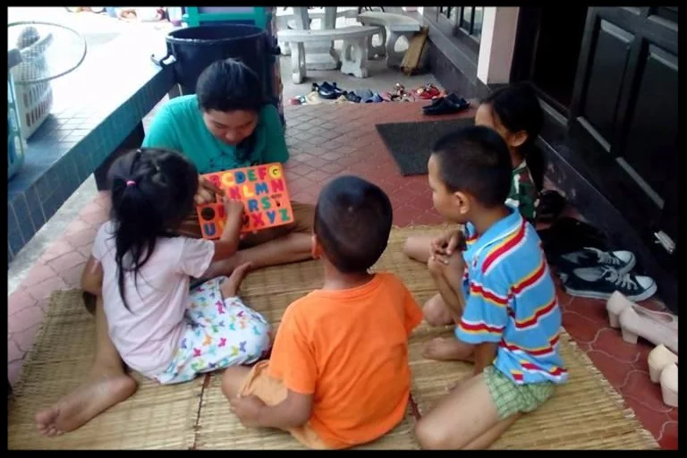
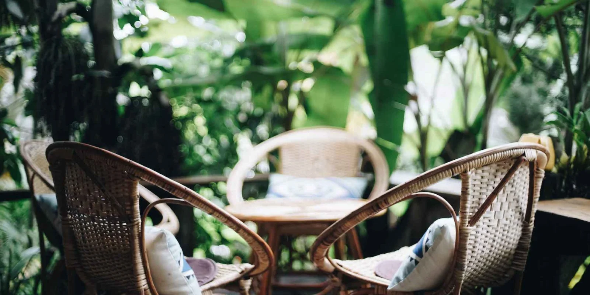

Cultural immersion from day one
You live, eat, study and serve inside Chiang Mai itself. Night markets, temple districts, hill-tribe villages. Cross-cultural fluency is not a module here. It is the water you swim in.
Forget the traditional classroom.
3 months of intensive discipleship + 2 months of raw, real-world field ministry. Designed for young creatives, strategic thinkers and leaders ready to be part of something bigger than themselves.
Why Northern Thailand
Most missions training happens in a suburb that looks exactly like the one you left. Ours happens where the work actually is.
You live, eat, study and serve inside Chiang Mai itself. Night markets, temple districts, hill-tribe villages. Cross-cultural fluency is not a module here. It is the water you swim in.
Same international staff calibre, a fraction of the overheads. Housing, meals and instruction land at roughly half what an equivalent program costs in the US, Australia or Europe.
Film studios, anti-trafficking teams, children's homes, business incubators, frontier research desks. You rotate through a live ecosystem, not a syllabus.
Six open tracks. Equal weight. Zero jargon.
Every track below is a real program run on this campus. We have translated the insider acronyms so you know exactly what you are choosing.
Known inside YWAM as "DTS". The 5-month foundation everything else builds on.
Skill focus: Character, spiritual formation, cross-cultural teamwork
Known inside YWAM as "SOFM". Research, mapping and strategy for the least-reached places on earth.
Skill focus: Strategic research, people-group analysis, field planning
Known inside YWAM as "BELT". Deep scripture study paired with hands-on leadership reps.
Skill focus: Biblical literacy, teaching, team leadership
Known inside YWAM as "BAM". Build a real, revenue-earning venture that funds long-term impact.
Skill focus: Entrepreneurship, operations, ethical supply chains
A long-running residential care ministry for at-risk children in Chiang Mai.
Skill focus: Child development, trauma-informed care, family support
A working production house telling untold stories across Southeast Asia.
Skill focus: Cinematography, editing, documentary storytelling
No hidden fees. No vague promises.
US$0
One all-inclusive figure for the full 5 months.
Comparable western-based programs: US$8,900+
0%
of students report total spiritual transformation by graduation
0/10
grads move into ongoing impact-focused career tracks or full-time ministry
0+
nations represented among alumni over the last decade
"I arrived with a film degree and no idea what I believed. I left with a documentary credit, a community across four countries, and the first real sense of direction I have ever had."
"I thought DTS was code for something I would not understand. Turns out it was five months that rerouted my whole twenties. I run a social enterprise in Auckland now."
"The cost was the thing that nearly stopped me. Then I did the maths against a single semester at uni back home and booked the flight the same week."
"Home of Joy taught me more about care work in three months than two years of lectures ever did. I came back on staff."
Ongoing work students plug into alongside their school, all year round.

Teach Our Kids Shan Outreach Center
Shan Outreach Center

Spiritual Direction Create International
Create International
 Community Center
Community Center
 Bible Education & Leadership Training
Bible Education & Leadership Training
 Project Video Asia
Project Video Asia
No essays. No referees. Not yet.
Four questions. A real human replies within 24 hours with dates, the full track sheet, and an optional 20-minute video call. That is the entire first step.